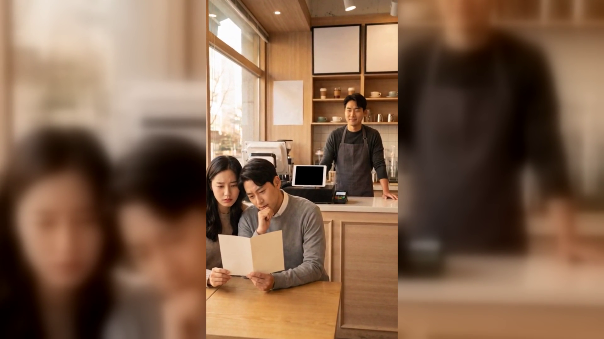
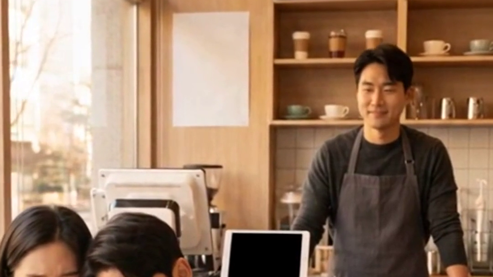
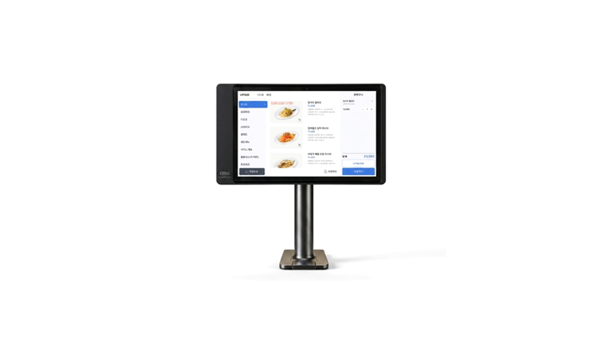

[제목]
카페메뉴판, 카운터 회전이 걸리는 자리 여섯 — 테이블오더 비교
[본문]
메뉴를 하나 바꿀 때마다 메뉴판을 다시 만듭니다. 그러다 보면 테이블에 놓인 것과 카운터 위에 붙은 것이 서로 달라집니다. 오늘은 카페 메뉴판이 회전을 어디서 잡아먹는지 정리했습니다.

결론부터 말씀드리면, 카페메뉴판에서 실제로 돈이 드는 쪽은 인쇄비가 아니라 손님이 고르는 데 걸리는 시간입니다.
- 손님이 메뉴판 앞에 서 있는 시간을 재 봅니다
카운터 앞에 와서 고르기 시작하면 그 시간만큼 뒤에 줄이 섭니다. 열 팀만 재 보면 우리 가게 평균이 나오고, 그 숫자가 다음 판단의 기준이 됩니다.
- 자주 나가는 것과 안 나가는 것을 나눕니다
위쪽 대여섯 개가 매출 대부분을 만듭니다. 눈에 먼저 들어오는 자리를 바꾸는 것만으로 고르는 속도가 붙습니다.
- 계절 메뉴를 어디에 붙일지 정합니다
매번 전체를 다시 만들면 비용과 손이 같이 듭니다. 바뀌는 부분만 떼어 낼 수 있게 자리를 미리 나눠 두시면 다음 교체가 훨씬 가볍습니다.
- 테이블과 카운터의 내용이 같은지 대조합니다
다르면 손님이 카운터에서 한 번 더 묻습니다. 이 되묻는 한 번이 피크 시간에 가장 비쌉니다.
- 사진이 필요한 메뉴만 추립니다
전부 사진을 넣으면 오히려 못 고릅니다. 처음 보는 메뉴, 설명이 필요한 메뉴에만 붙이는 편이 결정을 빠르게 합니다.
- 바꾼 뒤 일주일 매출을 같은 시간대로 비교합니다
메뉴판을 바꾸면 팔리는 구성이 바뀝니다. 바꾸기 전 일주일과 같은 요일·같은 시간대로 비교해야 효과가 눈에 보입니다.

위 3번과 4번을 매번 손으로 맞추고 계시다면 테이블오더 쪽이 손이 덜 갑니다. 테이블에서 바로 고르고 주문까지 끝나면 카운터 앞에서 고르는 시간 자체가 사라집니다. 정품 신제품 보증 · 수도권 직영 설치를 원칙으로, 홀 구조를 보고 대수를 함께 잡아 드립니다.
메뉴판을 바꾸는 일은 디자인이 아니라 동선 정리입니다. 오늘 열 팀만, 고르는 시간을 재 보세요.
- 📞 전화상담 1544-7754
- 🌐 홈페이지 https://nwpos.co.kr

📷 인스타그램 팔로우 https://www.instagram.com/nurinetworkspos

▶️ 유튜브 구독 https://www.youtube.com/@nurinetworks
(2026년 9월 기준)
15초 3채널 공용 = 카페 메뉴판에서 테이블오더로
① 상황 — 창가 테이블, 종이 메뉴판을 사이에 두고 고민하는 손님 두 명
② 행동 — 테이블 위 태블릿을 손끝으로 고르고, 사장님은 카운터에서 다른 일 처리
③ 제품 — 테이블 위 테이블오더 태블릿 클로즈업 (첫 2초 = 3채널 썸네일)
[대표이미지]
- 이미지1-매장: 창가 테이블에서 종이 메뉴판을 놓고 고민하는 손님과, 카운터에서 기다리는 사장님
- 이미지2-제품: 카페 테이블 위 테이블오더 태블릿 제품 컷 (화면 완전 공백)